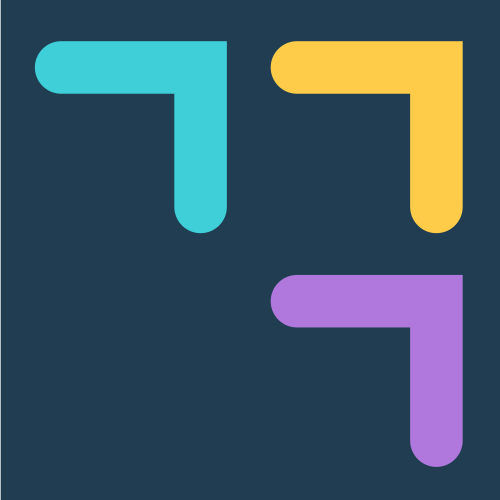

Nous déterminons la version adaptée à votre ordinateur.
macOS : sur Safari, l'architecture (Apple Silicon / Intel) n'est pas détectable.
Le lien par défaut propose Apple Silicon (M1/M2/M3…) ; si vous êtes sur Intel, choisissez « Mac (Intel x64) ».
Linux : format AppImage (x86_64) — rendez-le exécutable puis lancez-le.
Windows : installeur .exe signé par SymAlgo Technologies.